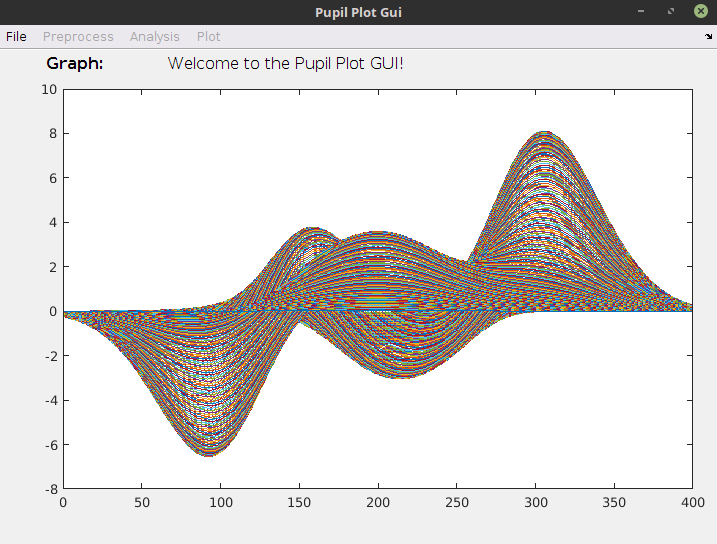

PupilPlot

Menu Categories:
1) Dirty data
2) cleaned data
3) plot of pupil diameter by condition without baseline removed (all subjects)
4) plot % of change by condition
5) plot baseline-corrected pupil diameter by condition
6) Plot mean functional pupil diameter difference by condition
7) Anova and binned time comparision of pupil diameter by condition
8) Plot stimulus factor p-value
9) Plot the functional t-test of the difference between conditions
10) plot functional t-test of the difference between specific condtions
11) Plot PCA factor loadings for selected componenets
12) peak dilation comparison.
Other functions
- plot button
- save plot as
- save as figure
- select conditions